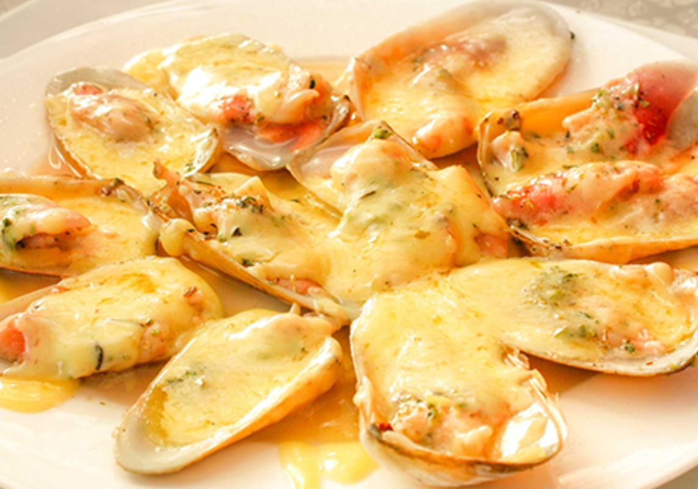
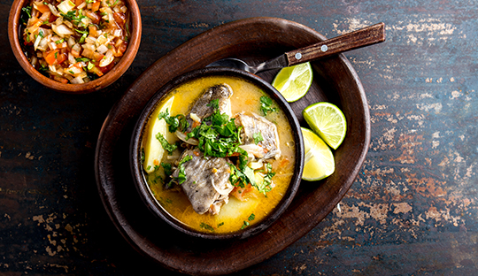
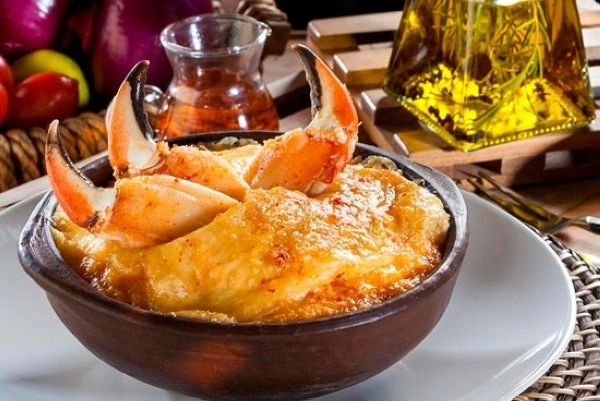

Machas a la Parmesana
Machas frescas gratinadas con queso parmesano. Un clásico de las costas chilenas.

Curanto
Plato típico del sur que mezcla mariscos, carnes y papas cocidas bajo tierra.

Caldillo de Congrio
Sopa tradicional preparada con congrio, papas y verduras. Muy reconfortante.

Chupe de Jaiba
Preparación cremosa hecha con carne de jaiba, pan remojado y queso gratinado al horno.